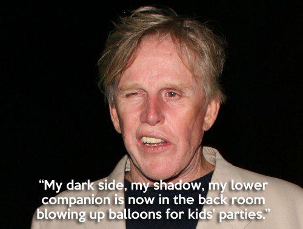

My name is Ben Leahy, I am a student and this is my profile. This will be my final transmission. I have accepted Gary Busey as my lord and personal savior. As he is bestowed upon to me, I will bestow upon the world the teachings of Busey and his prism of consciousness.
I serve The Busey.
I bathe in an infinite sea of tremendous acting.
I am His disciple.
This is a chimpanzee named Bubbles. As a student with a profile, I am extremely jealous of Bubbles but Busey has the divine right to choose his own lovers, therefore there is nothing I can do.
This is Woof Blitzer. He too was a fan of Gary Busey until the Satanist Andrew Simpson killed him.
Here is a list of films that would have been better if the lead role(s) had been replaced by Him.
